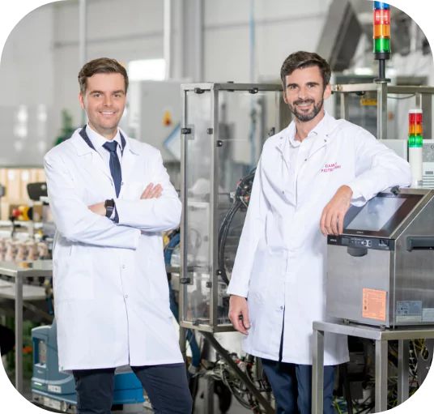

-
Unternehmen mit Tradition
Aerosol Service ist ein Unternehmen mit 30-jähriger Erfahrung in der Auftragsfertigung und Private-Label-Herstellung in den Bereichen Kosmetik und Haushaltschemie. Unsere Leidenschaft und Engagement für die Entwicklung von Produkten haben uns bei unseren Geschäftspartnern sehr geschätzt gemacht. Wir sind stolz darauf, dass unsere Produkte von vielen Kunden weltweit auf den Regalen der Geschäfte zu finden sind und ihre hohe Qualität anerkannt wird. Wir streben ständig danach, unsere Dienstleistungen zu verbessern und innovative Lösungen zu schaffen, die einen realen Einfluss auf die Lebensqualität der Verbraucher weltweit haben.
- 
Aerosol Service ist ein Unternehmen mit 30-jähriger Erfahrung in der Auftragsfertigung und Private-Label-Herstellung in den Bereichen Kosmetik und Haushaltschemie. Unsere Leidenschaft und Engagement für die Entwicklung von Produkten haben uns bei unseren Geschäftspartnern sehr geschätzt gemacht. Wir sind stolz darauf, dass unsere Produkte von vielen Kunden weltweit auf den Regalen der Geschäfte zu finden sind und ihre hohe Qualität anerkannt wird. Wir streben ständig danach, unsere Dienstleistungen zu verbessern und innovative Lösungen zu schaffen, die einen realen Einfluss auf die Lebensqualität der Verbraucher weltweit haben.
-
Gemeinsam gestalten wir die Zukunft
Bei Aerosol Service wissen wir, dass die Jugend das Fundament zukünftiger Erfolge ist. Deshalb engagieren wir uns im Sponsoring von Jugend-Sportmannschaften und Veranstaltungen von regionaler und überregionaler Bedeutung. Wir möchten Talente inspirieren und unterstützen, ihre Leidenschaft entwickeln und starke Bindungen in der lokalen Gemeinschaft aufbauen. Unser Engagement ist ein Beitrag zur Zukunft unserer Jugend und zum Aufbau einer besseren Zukunft.
-
Verantwortung ist die Grundlage.
Engagement für den Umweltschutz ist für uns eine Priorität. Wir handeln mit vollem Umweltbewusstsein und setzen innovative Lösungen und umweltfreundliche Technologien ein. Wir setzen uns für nachhaltige Entwicklung ein und kümmern uns um unseren Planeten für zukünftige Generationen.
Sozial bewusst
Bei Aerosol Service handelt es sich um ein sozialbewusstes Unternehmen, für das soziale Verantwortung ein zentraler Wert ist. Wir handeln nach ethischen Prinzipien und kümmern uns um das Wohl unserer Mitarbeiter, Kunden und der Umwelt. Unser soziales Bewusstsein motiviert uns dazu, Maßnahmen für die lokale Gemeinschaft zu ergreifen und positive Auswirkungen zu verbreiten. Wir sind ein vertrauenswürdiger Partner, der sich für das Gemeinwohl einsetzt.